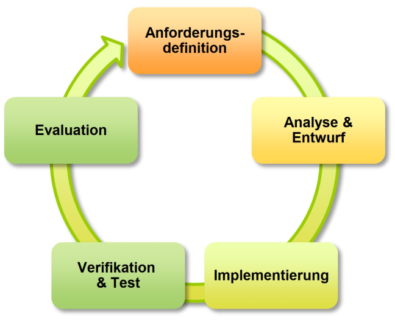

Software Design#
Architecture is about the important stuff — whatever that is.
— Ralph Johnson
Slides/PDF#
Recap: In-Class Question#
What are the four fundamental elements of a program?
Recap: Program Elements#
We all know the fundamental building blocks of a program:
Statements
Functions
Branching
Loops & Recursion
We know how to design algorithms and combine these elements.
Object-Oriented Software Design with UML#
In object-oriented software design, a program is designed to consist solely of objects. In this context, one usually uses the modeling language UML; classes can also be designed visually.
In design, one models how:
these objects are defined as classes,
which attributes and methods they possess,
how these classes build on one another (inheritance),
as well as how they relate to each other in static relationships (references),
and how they interact dynamically (behavior).
Classes, Attributes, and Methods#
A class here is only a rectangle with three compartments. In the first compartment you write the class name. In the second compartment you list all primitive attributes of a class (which do not represent references). The third compartment contains all the methods of the class. For the previously defined Point with the attributes x and y and the distance() method to another point, the class in UML looks like this:
References#
A very important task in UML is visualizing dependencies between classes in the form of references. In UML, references are distinguished by the type of ownership, i.e., whether an object is part of another and can exist without it (Aggregation) or cannot exist without it (Composition), or is completely independent (Association). For this, UML defines different arrow types. Here, you can indicate the multiplicity (the number of instances) of the source and target classes on the lines.
The previously defined class Line includes the start and end points. This represents an aggregation in UML, because the points belong to the line, but can also exist independently (we don’t need a line to define a point). The multiplicity here is that for each instance of Line there are two instances of the Point class.
Inheritance#
An important aspect of working with UML is inheritance. In UML, inheritance is drawn with a filled triangle ‘▲’ at the superclass (it’s not an arrow). For example, to express that Triangle, Tetragon, and Pentagon are subclasses of the Polygon, we can draw.
If we combine the individual elements, the UML diagram of our class model looks as follows:
Based on this UML diagram, a programmer would understand the relationships between the classes and could implement them accordingly. They are particularly well suited for defining and communicating such data structures.
We can now further refine this model and introduce additional, more specific classes for triangles, such as right-angled (Right), acute (Acute), and obtuse (Obtuse) triangles, which can be scalene, isosceles, or equilateral. Similarly, we can classify quadrilaterals into trapezoids, parallelograms, and kites, with the specialization rhombus, rectangle, and square.
Each instance of these special classes inherits the functions area() and __str__(). So with a single generic implementation of area() for computing the area of a polygon, we only needed to implement one method that covers the area calculation for all geometric primitive elements, without having to write another line of code for this.
Along the inheritance hierarchy, one could now define additional attributes and methods that can perform specific calculations or, for example, test whether the points, lines, and angles meet the corresponding conditions. However, this is outside the scope of this example.
Design Approach in Software Development#
Software is today developed almost exclusively in teams over extended periods. This teamwork requires a well-thought-out project plan that defines both the structural composition of the software and the timing of the development. Software design therefore comprises two essential components: the blueprint in the form of the class design and the development workflow planning as the programming approach.
The approach to software design shows remarkable similarities to established practices in civil and environmental engineering. Just as in building a bridge or a wastewater treatment plant, in software development the requirements must be clearly defined, a structured design must be created, and the implementation must be systematically planned. These parallels help to better understand the principles of software design.
A structured approach is essential because it enables teamwork, ensures quality, and keeps costs under control. Without systematic planning, development processes often become chaotic, leading to faulty software, missed deadlines, and budget problems.
The Phases of Software Development#
Requirements Definition#
The first phase focuses on precisely defining what the software is supposed to do. Here, both functional aspects and constraints are defined. In civil engineering, this corresponds to the project specification, which documents the functions and constraints the structure must satisfy.
For a bridge, for example, the permissible traffic loads, the span to be crossed, and the required service life are defined. For a wastewater treatment plant, the number of residents to be connected, the required level of treatment, and the limits to be met are specified. Likewise, in software development all functional requirements, performance parameters, and technical constraints must be clearly articulated.
Design Phase#
The design defines how the software should be structurally built. This phase is divided into high-level design, where the software is divided into logical modules, and detailed design, which specifies when which components will be developed by whom.
In civil engineering, this corresponds to architectural design and planning. In building construction, the basic structure with foundation, the shell, and the interior fit-out is planned first, before details such as reinforcement drawings and installations are prepared. Similarly, in software development the overall architecture is designed first, before the individual classes and their interfaces are defined.
Implementation Phase#
Implementation encompasses both the coding of the individual software components and their integration into a functioning overall system. During implementation, the individual classes and modules are programmed according to the design specifications. The subsequent integration brings these parts together into the finished solution.
In construction, different trades work in parallel on their respective tasks before their work is coordinated and brought together. In a water infrastructure project, for example, pumping stations, pipelines, and control systems are initially built separately and then connected to form a functioning water supply system.
Acceptance and Testing#
The acceptance phase ensures that the finished software meets all requirements. This happens in several stages: first, individual modules are tested in isolation; then the interaction between modules is tested; and finally the entire system is tested under real-world conditions.
This approach corresponds to commissioning of the building, where progress also proceeds in stages. In a wastewater treatment plant, for example, individual pumps are first tested for their function, then the interaction of control, pumps, and sensors is tested, and finally the entire plant is commissioned under real conditions.
Waterfall Method - The Traditional Development Model#
The Waterfall Method represents the traditional approach to software development and is still frequently demanded in tenders for large systems. Its hallmark is the strictly sequential execution of the development phases, with each phase fully completed before the next begins.
This method is characterized by limited user involvement, primarily confined to requirements definition. Each activity is thoroughly documented, which makes the method particularly suitable for tenders and ISO 9000-compliant developments.

The major advantage of this method lies in its predictability and structured approach. Costs and schedules can be estimated precisely, and the comprehensive documentation meets all formal requirements. However, the sequential nature means that errors from early phases are only discovered very late, which can lead to expensive rework.
The Waterfall Method corresponds to the traditional construction approach. For a highway bridge, all requirements are first defined in the tender, then the complete planning from structural analysis to execution planning is carried out before actual construction begins. Only after the completion of the entire structure are the load tests and acceptance performed.
V-Model - Development with Systematic Test Planning#
The V-Model was specifically designed for the development of safety-critical software and is primarily used in the automotive and aerospace industries. It extends the Waterfall model with a systematic test planning that begins during the development phase.
The characteristic V-shaped model clearly separates development activities from testing activities. While the actual development takes place on the left side, the corresponding tests are defined and carried out on the right side. Each development phase has its corresponding testing phase, resulting in high test coverage.

The V-Model offers the advantage of systematic quality assurance with high traceability. However, it is more resource-intensive than other methods and is therefore primarily suited for areas where safety and reliability are the highest priority.
In tunnel construction, a safety-critical area of civil engineering, a similar approach is taken. Already during the planning of the safety systems, the corresponding test procedures are defined. For each fire detector, it is determined how it will be tested; for the interaction between fire detection and ventilation control, integration tests are planned; and for the overall system, a complete evacuation drill with the fire department is designed.
Agile Method - Flexibility Through Iterative Development#
The agile method represents a modern response to the challenges of rapidly changing requirements. Instead of planning a complete system from start to finish, it is developed incrementally and continuously improved.
The agile approach begins with a Minimum Viable Product, the simplest working version of the software. This is then extended and improved in regular cycles, with each iteration adding new features or optimizing existing ones. Development cycles are typically short and usually last only a few months.

The major advantage of the agile method lies in its flexibility and the possibility of receiving feedback early. Users can test already working versions and provide suggestions for improvements. This reduces the risk of developing away from actual needs.
However, the agile method also carries risks. Design flaws in early iterations can lead to the need to overhaul the entire architecture. Additionally, cost and schedule planning is more difficult because the final product is not fully specified at the start of the project.
An example from the construction industry is modular construction, which is becoming increasingly popular, especially in timber construction. Instead of planning and building a structure in its entirety, individual modules are planned first, which can be combined with each other repeatedly. The modules can be assembled and tested individually before they are put together in the final building.
Approach Selection in Practice#
The choice of the appropriate development methodology depends heavily on the project context. For standardized systems with clear requirements, the Waterfall method is suitable, while safety-critical applications require the V-Model’s systematic test planning. Agile methods are ideal for innovative projects with evolving requirements.
In engineering practice, hybrid approaches are often sensible. A tunnel project could, for example, plan the basic construction according to the Waterfall model, develop the safety systems according to the V-Model, and implement the operations management software in an agile manner.